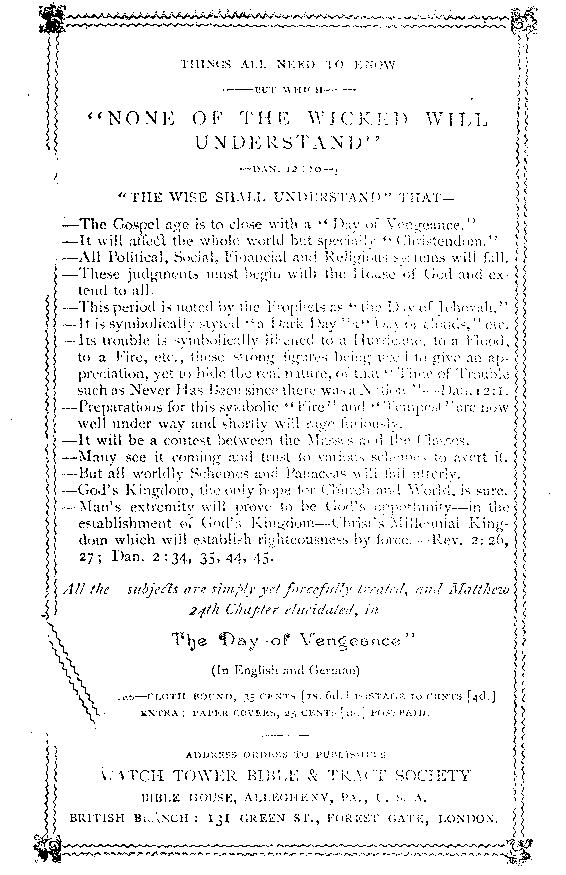

No. 53—The Scriptures Clearly Teach the Old Theology That Death Is the Wages of Sin, and Not
- "Eternal Torment
A
^TAe Qld ^AeoZog j
THAff
JW^A X 10aS@s of ^)TTbf and
NOT ETERNAL TORMENT
—— ROMANS 6 I 23< —
- 1901
WATCH TOWER BIBLE & TR..LCT SOCIETY
ALLEGHENY, PA^
A:y. ii)dr;
SwJjiRSb AS SECOND CLASS MAU. MATTER AT THE POSTWFFICE, ALLftdff K«V, SAMPLE TRACTS FREE; SUBSCRIPTION PRICE, SIX CENTS!?!.; PER YEAR — 48 PACES 0 hD~ T^O WgFQU flRThY
— FOK THE —
PROMOTION OF CHRISTIAN KNOWLEDGE.
PUBI.ISliEb BY Tilt.
BIBLE HOUSE, ALLEGHENY, PA., U. S. A.
BRITISH BRANCH, 131 GREEN ST., FOREST GATE, LONDON.
NO. 7. THE WON®BRFUt STORY, $2 PP-
NO. 12. WHY EVIL WAS PERMITTED.
NO. 15. REPLY TO INGERSOLL.
NO. 21. DO YOU KNOW?
NO. 37. HOW REAOEST THOU ?
NO. 38. HOPS OF I74MORTALITY.
NO. 40. WHAT' IS THE SOUL?
NO. 41. MUST WF ABANDON HOPS OP A GOLDEN AGE I
NO. 42. CROSSES THUS AND FALSE.
NO. 44. GATHERING THE LORD'S JEWELS.
NO 49. WHICH IS TH H TRUE GOSPEL ?
NO 52. OCR LORD’S RETURN.
NC 53. THE WAGES OF SIN. .
NO. 54. A DARK CLOUD AND ITS SILVER T.IN”-'-.
NO. 57. CALAMITIES—WHY GOD PERMITS THEM
NO. 58. PURGATORY.
NO. 50. THE world’s HOPE.
NO. 60. BRINGING BACK TUB KING.
Nos 21, 28, 40 and 53 car. be had in.Swedish.
Nos. at, 27 and 53 can be had in Dano-Ner-weginn
Nos. 3, 12, zi, 22, 28, 38, 40, 49 and 53 can be had in German.
Nos. 21 and 22 can be had in French.
Extra copies of the above tracts will be supplied free, on application, to subscribers; or a single sample to any one Thus many may be coworkers with us and with Godin scattering the truth—“the hail.”—b-a. 28: 17 Hundreds of thousands are being circulated thus, the fm .5 being supplied by voluntary contributions from those whose hearts ■ d heads have been refreshed by these “glad tidings of great joy winch shall be unto all people. ’ ’
BOOKLETS
ths wondek.^ul STORY, “the old, old story.” Illustrated.— 60 pp what sav the SCRIPTURES about hell?—88 pages. Also in German what say the scriptures about spikitism?—128 pages. Aiso in German TABURNACIIR SHADOWS OF BETTER SACRIFICES. IH. —130 pp Also in Get man
Extra Copies of the above booklets are supplied to subscribers at ioc (;-d ) each, or 50c (.?/6) per dozen: those below at 5. (2 jd.) each, 25c (.77) per dozen.
THY WORD IS THITH. A REPLY TO INGERSOLL. 48 pp.
the bible vs. tke EVOLUTION thsokv 48 pp. Also in German.
the parousia of our LORD. 78 pp. Also in Swedish.
epistle to the kesrfws Illustrated.—64 pp. In Yiddish, only.
German Watch Tower & Old Theology Quarterly—Translations.
— QUARTERLY FOR ONE YEAR, 25 CENTS. —
We call supply copies of the first to issues at the rate of 19 copies for 25 cents. Sample copies for free circulation, gratis, postpaid.
> thh
WAGES of SIN is DEATH
“ The wages of sin is death'' “By one man sin entered into the world, and death by [as a consequence of~\ sin."—Rom. 6 : 23 ; j: 12.
'The teaching of “Orthodoxy,” that the wages of sin is * everlasting torment, is emphatically contradicted by the above words of inspiration, and by many others, direct and indirect, which might be cited. How reasonable is the Bible statement, and how absurd the common view, which is founded neither in reason nor in the Scriptures, and which is in most violent antagonism to the plan and character of God, as presented in his Word.
The eternal torment theory had a heathen origin, though as held by the heathen it was not the merciless dodlrine it afterward became, when it began gradually to attach itself to nominal Christianity during its blending with heathen philosophies in the second century. It remained for the great apostasy to tack to heathen philosophy the horrible details now so generally believed; to paint them upon the church walls, as was done in Europe; to write them in their creeds and hymns; and to so pervert the Word of God as to give a seeming divine support to the God-dishonoring error. The credulity of the present day. therefore, receives' it as a legacy, not from the Lord, or the apostles, or the
prophets, but from the compromising spirit which sacrificed truth and reason, and shamefully perverted the dodlrines of Christianity, in an unholy ambition and strife for power and wealth and numbers.
Eternal torment as the penalty for sin was unknown to the patriarchs of past ages; it was unknown to the prophets of the Jewish age; and it was unknown to the Lord and the apostles; but it has been the chief doctrine of nominal Christianity since the great apostasy: it has been the scourge wherewith the credulous, ignorant and superstitious of the world have been lashed into servile obedience to tyranny. Eternal torment was pronounced against all who offered resistance to, or spurned Rome’s authority, and its infliction in the present life was begun so far as she had power; and the pains of purgatory she promised, in such measure as she should dictate, to any of her votaries who showed the slightest disposition to be refractory. Under the terrible bondage of a superstitious reverence for self-exalted fellow-men, in dense ignorance of God’s real plan, and tormented with a wretched fear of eternal misery, the masses of men resigned both their reason and the Word of God; and even yet, under the increasing light and liberty of this nineteenth century, men scarcely dare to think for themselves on religion and the Bible.
WHAT SAY THE SCRIPTURES?
Let God’s inspired writers be heard in opposition to heathenized church traditions, and let reason judge which is the right view, and which the error. First note the Old Testament,—the divine revelation covering 4000 years. The prophets of the Old Testament do not mention a word about eternal torment; but they do repeatedly mention destruction as the sinner’s doom, and declare over and over again that the enemies of the Lord shall perish. The
Law given to Israel through Moses never hinted at any other penalty than death, in case of its violation. The ' warning of Adam when placed on trial in Eden contained not the remotest suggestion of eternal torture in case of failure and disobedience; but, on the contrary, it clearly stated that the penalty would be death,—“In the day that thou eatest thereof, dying, thou shalt die.''''—Gen. 2:17, margin. Compare 2 Pet. 3:8.
Surely, if the penalty of disobedience and failure is everlasting life in torment, an inexcusable wrong was done to Adam, and to the patriarchs, and to the Jewish people, when they were misinformed on the subjedt, and told that death was the penalty. Surely Adam, the patriarchs, or the Jews, were they ever to find themselves in eternal torment, where the various sectarian creeds of Christendom assert that the vast majority will find themselves, would have sufficient ground for an appeal for justice. Such, no less than the heathen billions who died without knowledge, and hence surely without faith, would have just ground for cursing the injustice of such a penalty, as a most atrocious misuse of power—first, in bringing them into a trial subject to such an awful and unreasonable penalty, without their consent; and secondly, for leaving the one class wholly ignorant of such a penalty, and for misleading the others by telling them that the penalty of sin would be death,— to perish. It must be admitted that the presumption to declare that death, destruction, perish, and similar terms, mean life in torment, belongs to word-twisting theologians since the days of the apostles; for, as we shall prove, the apostles taught nothing of the kind.
Look at the New Testament writings: Paul says he did not shun to declare the whole counsel of God (Adis ■20: 27), and yet he did not write a word about eternal torment. Neither did Peter? nor James; nor Jude^ nor
John ; though it is claimed that John did, in the symbolic figures of Revelation. But since those who make this claim consider the Book of Revelation a sealed book, which they do not and cannot understand, they have no right to interpret any portion of it literally, in violation of its stated symbolic charadter, and in diredt opposition to the remainder of the Bible, including John’s plain non-symbolic epistles. .
Since the apostles do not so much as mention eternal torment, all truth-seekers, especially Christians, should be interested to search what they do teach concerning the penalty of sin,—remembering that t-hey, and not the apostate church of the darker ages, taught “the whole counsel of God.”
The Apostle Paul states the matter thus: “The wages of sin is death the disobedient “shall be punished with everlasting destruction from the presence of the Lord, and from the glory of his power;” and “ many walk, who are the enemies of the cross of Christ, whose end is destruction." -—Rom. 6 : 23; 2 Thes. 1:9; Phil. 3:19.
The Apostle John says: “The world passeth away and the lust thereof; but he that doeth the will of God abideth forever. . . . He that committeth sin is of the devil, for the devil sinneth from the beginning. For this purpose the Son of God was manifested that he might destroy the works of the devil. . . . He that loveth not his brother abideth in death. Whosoever hateth his brother is a murderer, and we know that no murderer hath eternal life abiding in him. . . . He that hath the Son hath life; and he that hath not the Son of God hath not life."—1 John 2:17; 3:8, 14, 15 i 5 : I2-
The Apostle Peter says: The disobedient “shall be destroyed from among the people;” that evil doers “bring upon themselves swift destruction and that the Lord is'
The W>s Sm is
“ not desiring that any should perish, but that all should come to repentance.”—Adis 3: 23; 2 Pet. 2:1; 3:9.
The Apostle James says: “Sin, when it is finished, bringeth forth death." “There is one law-giver who is able to saxre and to destroy."—Jas. 1:15; 4:12.
THE REAL PENALTY SEVERE, BUT JUST.
No one who has studied the subjedt can consider the penalty of sin, as Scripturally set forth and defined, too slight a punishment. When understood, it is seen to be neither too slight nor too severe, but simply a just recompense of reward. “The gift of God,” says the Apostle, “is eternal life.” And that gift or favor bestowed upon Adam, and through him upon his posterity, was to be lasting only on condition of its proper use, which was to glorify God in its well-being and well-doing, and not to dishonor him by rebellion and sin. When God creates he reserves to himself both the right and the power to destroy that which he considers unworthy of continuous existence. When man sinned, therefore, God simply withdrew the favor he had granted, which had been misused, and death (destruction) followed : preceded naturally by the dying— pain, sickness, and mental, moral and physical decay.
Had God not provided redemption through Christ, the death penalty which came upon our race in Adam would have been everlasting; but in divine mercy all have been redeemed from death. Yet all must again, individually, come under the same divine law, which changes not; namely, “The wages of sin is death; but the gift of God is eternal life through Jesus Christ our Lord.”
Did c-ur Lord Jesus ever use the expression, eternal torment? or even once hint that he came into the world to save men from eternal torment? No, never! Yet, if this W6W the truth, and if they were in danger of a penalty iq
terrible for not receiving him, it would have been neither just nor merciful in him to have kept back a truth so important. He did tell them, however, that he came to save them from death, from perishing. Death, the penalty of sin, being against all, none could hope for a resurrection to any future life, but all were hopelessly perishing, unless Christ should redeem them from death, to that which wras lost to Adam,—to righteousness and its privileges of everlasting life and favor. The Lord’s title, Savior, has a weight, too, in this examination. It does not imply a deliverer or savior from torment, but a savior from death. The Lord and the apostles used the language of the Samaritans, and in that tongue the word for Savior signifies Lifegiver.
What did our Lord say of his mission ? we may well inquire. He said that he came “to preach deliverance to the captives.'1' What captives could he refer to but the captives of sin, receiving daily its wages-—dying by inches and entering the great prison-house, the tomb? He said he came to “open the prison-doors’’—what prison, but the tomb? of which also the Prophet had spoken. (See Isa. 61: r; Luke 4: 18.) He declared that he came that mankind “might have life;" that he came “ to give his life a ransom for many" lives—in order that by believing in him men “should not perish, but have eternal life’," and again, “Narrow is the way that leadeth unto life," and “broad is the way that leadeth to destruction."—John 10: 10; Matt. 20: 28; John 3:15; Matt. 7 : 13.
AN UNANSWERABLE ARGUMENT.
It will, generally be admitted by Christians claiming to be orthodox that our Lord Jesus redeemed mankind by his death; that he endured willingly the penalty of man’s sins, in order that man might be released from that penalty. “ Surely he hath borne our griefs and carried our sorrows.” “ He was wounded for our transgressions; he was bruised for our iniquities; the chastisement for our peace was upon him; and by his stripes we are healed. ’ ’— Isa. 53:4, 5.
This being admitted, it becomes an easy matter to decide, to an absolute, unquestionable certainty, what the penalty of our sins was, if we know what our Lord Jesus did endure when “the chastisement for our peace” was inflidted upon his willing head. Is he suffering eternal torment for us? If so, that would thus be proven to be the penalty against our sins. But no one claims this, and the Scriptures teach to the contrary, that our Lord is now in glory, and not in torment, which is incontrovertible proof that the wages of sin is not torment.
But what did our Lord do to secure the cancellation of our sins? What did he give when he paid our ransom price—the price ox penalty against sinners? Let the Scriptures answer. They repeatedly and explicitly declare that Christ died for our sins; that he gave his life a ransom to secure life for the condemned sinners; that he bought us with his own precious blood; that for this purpose the Son of God was manifested in flesh; that he might give his flesh for the life of the world; that as by man (Adam) came death, by man (“the man Christ Jesus”) might come the resurrection of the dead.—1 Cor. 15:3; Matt. 20:28; 1 Tim. 2:5, 6; Hos. 13: 14; 1 Cor. 6: 20; 1 Pet. 1: 18, 19; 1 John 3:8; John 6:51; 1 Cor. 15 : 21.
Is there room to question further the clear Bible dodtrine that “ the wages of sin is death ”? Is there room to doubt further either the unscripturalness or the unreasonableness of the heathenish dogma of eternal torment?
OBJECTIONS BRIEFLY CONSIDERED.
Our limited space will permit merely a glance at certain of our Lord’s parables and dark sayings, which,1 with the popular idea of torment firmly entrenched in the mind from childhood, appear to many to support that doCtrine.1 • We will, however, briefly notice two of these, generally considered impregnable—the parable of the sheep and the goats (Matt. 25 : 4-46), and the parable of the rich man and Lazarus. (Luke 16:19-31.) We shall find that, properly interpreted, they teach nothing of the kind.
Not to enter into details—the parable of the sheep and the goats describes a trial of the world of mankind in the coming Millennial age—“When the Son of man shall sit upon the throne of his glory.” The separating work will be according to character, and will require all of that period of a thousand years. Verses 41 and 46, which give expression to the final sentence upon all the lovers of unrighteousness, the goats, are the points upon which the interest of our topic centers.
Verse 41 reads, “Depart from me, accursed ones, into lasting fire, prepared for the devil and his messengers” (servants). We must infer that the fire here is as symbolic as the goats which go into it. As goats fitly represent wayward and unrighteous men, so fire fitly represents destruction. Fire is always destructive, never preservative. The goats cast into a fire would be consumed, destroyed, if the fire did not too soon become extinct. And hence in the parable, in order to show the certainty and completeness of the destruction of the finally incorrigible, the symbolic goats are represented as being cast into a lasting fire; i. e., a lasting or perpetual destruction—extinction.
Verse 46 reads, “And these shall go away into everlasting punishment.” We are not questioning that the unrighteous are to be punished, nor that the punishment upon th’s class is to be everlasting; the nature of the punishment is the question we are investigating. Since the wages or punishment of sin is death, everlasting punishment would be everlasting death,—a death from which there would be no resurrection. As clearly stated all through the Scriptures, the punishment or wages of f in is death, and nothing else, and this parable certainly teaches nothing to the contrary.
Only the prejudice of deep-seated error makes this passage even appear, to some, to teach anything different. The Greek word rendered punishment in this verse, of itself, positively indicates the kind of punishment. The original word is kolasin, whereas if torment were meant the Greek word basinos would have been used. Kolasin, on the contrary, derived from kolazoo, signifies, (i) To cut off, as in pruning off branches from a tree; (2) To restrain, or repress. The Greeks write, ‘'The charioteer restrains his fiery steeds;” (3) To chastise, to punish; to cut off an individual from life or society; or even to restrain his liberties. That the first definition, “to cut off,” is the proper one in this case is evident from the antithesis of the succeeding and last clause of the verse, where life, the reward of the righteous, is put in contrast with the death, or cutting off from life, of the unrighteous.
THE PARABLE OF DIVES AND LAZARUS.
--LUKE l6: I9-3I.--
While this is admitted to be a parable, it is generally treated as if it were a literal statement. To regard it as a literal statement involves several absurdities; for instance, that the rich man went to hades because he had enjoyed many earthly blessings and gave nothing but crumbs to Lazarus. Not a word is said about his wickedness. Again, Lazarus is blessed, not because he was good, or full of faith in God, but simply because he was poor and sick. If thite be interpreted literally, the only lesson to be logically drawn from it is, that unless we are poor beggars full of sores, we will never enter into future bliss; and that if now we wear any fine linen and purple, and have plenty to eat every day, we are sure of future torment.
Again, the coveted place of favor is Abraham’s bosom; and if the whole statement is literal, the bosom must be literal, and surely would not hold very many of earth’s millions of sick and poor.
But why consider absurdities ? As a parable, it is easy of interpretation. In a parable, the thing said is never the thing meant; as for instance in the parable of the wheat and the tares, the Lord explained that wheat meant children of the Kingdom, and tares the children of the devil; and similar classes in another parable were represented by sheep and goats. So in this parable, the rich man must represent a class, and Lazarus another class; and the parable as a lesson applies to these classes.
The Rich Man (Dives) represented the Jewish people, which up to, and at the time of the parable ‘ fared sumptuously," as the special recipients of God’s favors and promises. As Paul said, the Jews had “much advantage every way, chiefly, because to them were committed the oracles of God” (the Law and the Prophets). The promises to Abraham and David invested that people with royalty, as represented by the rich man’s “purple." The typical sacrifices of the law constituted them, in a typical sense, a “holy nation,” represented by the rich man’s “fine linen" —symbolic of righteousness.—Rev. 19: 8.
The Poor Man (Lazarus) represented the God-fearing people of other nations, debarred, until the close of the Jewish Age, from those blessings conferred upon Israel specially. As the linen represented Israel’s justification, so the sores represented moral defilement in this class, for
whose justification no sin-offering had at that time been made. They were not even typically cleansed, and had as yet no share in the rich promises of the kingdom, the “purple.” They were, on the contrary, outcasts, strangers from Israel’s favors. (Eph. 2: 11-13). As to how these ate of the “crumbs” of divine favor which fell from Israel’s table of bounties;, and how they accounted themselves as companions of “dogs/’ the Lord’s .conversation with the Syro-Phoenician wonan, who was one of this class, explains. -—See Matt. 15:27. . . . ... . ..
But there came a change to both of these classes. The “rich man” (the Jewish nation) died, ceased to exist as a nation, and as the national representatives of God’s favors, when those favors were taken from them (Matt. 21: 43) and given to some, formerly outcasts. .
The “rich man” class was cast out of favor, into trouble. And from then till now the Jews as a people have been in torment; yet are hindered by their law prejudices (as a great gulf) from accepting Christ. The “Lazarus” class also died, or ceased from their former condition, and were received into the favor of God. (A6ts 10: 28-35.) Accepting Christ, these thenceforth were received to Abraham’s bosom—that is, they were accepted as the true children of believing Abraham, and the true heirs of the promise made to him.—See Gal. 3:16, 293 Rom. 11: 7-9, 12-25.
FORGIVABLE AND UNPARDONABLE SINS.
In the preceding pages we have briefly shown the extreme penalty for wilful sin. Adam’s penalty, which involved his entire race, was of this sort; and only as the result of Christ’s death as our ransom from that penalty, of that wilful sin, is any forgiveness of it or subsequent sins possible.
Forgivable sins are those which result from weaknesses incurred through that one Adamic sin which Christ settled once for all. They are such as are not wilful, but are committed through ignorance or weaknesses of the flesh. God stands pledged to forgive all such sins upon our repentance, in the name and merit of Christ’s sacrifice.
Unpardonable sins, sins which cannot be forgiven, are such as are wilfully done. As the penalty of the first wilful sin was death—extinction of being—so death is the penalty of every wilful sin against full knowledge and ability to choose and to do the right. This is called Second Death, in distinction from the former or Adamic penalty, from which Christ’s ransom sacrifice will release all mankind.
The <fsin unto [second] death,” for the forgiveness of which the Apostle declares it is useless to pray (i John 5:16), is not only a wilful sin, but a sin against clear knowledge; a sin for which no adequate excuse can be found. Because it is a sin against clear knowledge, or enlightenment in holiness, it is called the “sin against the Holy Spirit’* (Matt. 12:31, 32), for which there is no forgiveness.
But there are other partly-wilful sins, which are, therefore, partly unpardonable. In such the temptations within and without (all of which are direhlly or indirectly results of the fall) have a share;—the will consenting under the pressure of the temptation or because of the weakness. The Lord alone knows how to properly estimate our responsibilities and guilt in such cases. But to the true child of God there is but one proper course to take;—repentance and an appeal for mercy in the name and merit of Christ, the great sacrifice for sin. The Lord will forgive such a penitent, in the sense of restoring him to his favor; but he will be made to suffer “stripes” (Luke 12: 47, 48) for the sin, in proportion as God sees it to have been wilfully committed.
Not infrequently a conscientious person realizes that he has committed sin, and that it had some wilfqlness in it5 He properly feels condemned, guilty before God; realizing his own guilt, and forgetting the fountain for sin and un-'Jeanness, opened by God for our weak, fallen race, he falls into a state of sadness, believing that he has committed the sin unto death. Such wander in deserts drear, until they find the cleansing fountain. Let such remember, however, that the very fadts of their sorrow for sin and their desire to return to divine favor are proofs that they have not committed the sin unto death; for the Apostle declares that those who have committed sin of this sort cannot be renewed unto repentance. (Heb. 6:6.) Penitents, then, may always feel confident that their sins were in part, at least, results of the fall, and hence not unto death, but requiring forgiveness and stripes.
Such is the wonderful provision of God, through Christ, for the acceptance of every soul which, forsaking sin and the love of it, seeks righteousness and life through him who is the Way, as well as the Truth and the Life. Thus all, whether naturally stronger or weaker, have an equal opportunity to gain everlasting life as well as to gain the great prize of joint-heirship with Christ.
FUTURE RETRIBUTION.
While the Scriptures teach that the present Gospel age is the Church’s Judgment Day or period of trial, and that the world’s Judgment-day or time of trial will be the Millennial age, it is, nevertheless, a reasonable question to ask,— To what extent will those who are not of the consecrated Church be held responsible, in the Millennial age, for their misdeeds, of cruelty, dishonesty and immorality, of the present time? And to what extent will those of the same class then be rewarded for present efforts to live moral and benevolent lives ?
These are important questions, especially to the world* and well would it be for them if they could realize their importance, and profit thereby. They are important also to the Church, because of our interest in the world, and because of our desire to understand and teach correCtly our Father’s plans.
We have learned that the sacrifice of Christ secures for all mankind, however vile, an awakening from death, and the privilege of thereafter coming to perfection, and, if they will, of living forever. “There shall be a resurrection of the dead, both of the just and the unjust.” (ACts 24:15.) The objeCt of their being again brought into existence will be to give them a favorable opportunity to secure everlasting life, on the conditions which God requires—obedience to his righteous will. We have no intimation whatever in the Scriptures that, when awakened, the moral condition of men will have changed; but we have much, in both reason and revelation, to show that as they went into death weak and depraved, so they will come out of it. As there is “no work, nor device, nor knowledge, nor wisdom in the grave” (Eccl. 9:10), they will have learned nothing; and since they were sinners and unworthy of life and divine favor when they died, they will still be unworthy; and as they have received neither full rewards nor full punishments for the deeds of the present life, it is evident that just such a time of awakening as God has promised during the Millennium is necessary; —for rewarding, and punishing, and giving to all mankind the opportunity for eternal life secured by Christ’s great ransom sacrifice.
While, stridly speaking, the world is not now on trial, that is, the present is not the time for its full and complete trial, yet men are not now, nor have they ever been, entirely without light and ability, for the use of which they are accountable. In the darkest days of the world’s history s and in the deepest degradation of savage life, there has always been at least’a measure of the light of conscience pointing more or less diredtly to righteousness and virtue. That the deeds of the present life have much to do with the future, Paul taught very clearly when, before Felix, he reasoned of justice and self-government, in view of the judgment to come, so that Felix trembled.—Adis 24: 25, Diaglotttranslation.
At the first advent of our Lord an increased measure of light came to men, and to that extent increased their responsibility, as he said: “This is the condemnation, that light is come into the world, and men loved darkness rather than light, because their deeds were evil.” (John 3: 19.) For those evil deeds committed against the light possessed, whether of conscience or of revelation, men will have to give an account, and will receive, in their day of judgment, a just recompense of reward. And, likewise, to the extent of their effort to live righteously, they will receive their reward in the day of trial.—Matt. 10: 42.
If men would consider what even reason discerns, that a time of reckoning, of judgment, is coming, that God will not forever permit evil to triumph, and that in some way he will punish evil-doers, it would undoubtedly save them many sorrows and chastisements in the age to come. Said the Prophet, “Woe unto them that seek deep to hide their counsel from the Lord, and their works are in the dark, and they say, Who see th us? and who knoweth us?” (Isa. 29: 15.) Behold, “The eyes of the Lord are in every place, beholding fhe evil and the good” (Prov. 15:3); and “God shall bring every work into judgment, with every secret thing, whether it be good, or whether it be evil.” (Eccl. 12 : 14.) He “will bring to light the hidden things of darkness, and will make manifest the counsels of the hearts/’-—1 Cor. 4:5,
The age of Christ’s reign will be a time of just judgment; and though it will be an age of golden opportunities to all it will be a time of severe discipline, trial and punishment to many. That the judgment will be fair and impartial with due consideration for the circumstances and the opportunities of each individual, is also assured—-by the charade? of the Judge (the Christ—John 5:22; 1 Cor. 6: 2), by Ms perfed knowledge, by his unwavering justice and goodness, by his divine power and by his great love, as shown in his sacrifice to redeem men from death, that they might enjoy the privilege of this favorable, individual trial.
The varied circumstances and opportunities of men, in this and past ages, indicate that a just judgment will recognize differences in the degree of individual responsibility, which will also necessitate differences in the Lord's future dealings with them. And this reasonable deduction we find clearly confirmed by the Scriptures. The Judge has been, and still is, taking minute cognizance of men’s actions and words (Prov. 5: 21), although they have been entirely unaware of it; and he declares ths.t ‘‘Every idle (“pernicious,” injurious or malicious] word that men shall speak, they shall give account thereof in the day of judgment” (Matt. 12: 36); and that even a cup of cold water, given to one of his little ones, because he is Christ’s, shall in nowise lose its reward. (Matt. 10:42.) The context shows that the “pernicious” words to which Jesus referred were words of wilful and malicious opposition spoken against manifest light. (Matt. 12:24, 31, 32.) He also affirmed that it would be more tolerable for Tyre, Sidon and Sodom in the day of judgment than for Chorazin, Bethsaida and Capernaum, which had misimproved greater advantages of light and opportunity.—Matt. 11 : 20-24.
In the very nature of tilings, we can see that the punish-psents of that age will be in proportion to past guilt. Every sin indulged, and every evil propensity cultivated, hardens the heart and makes the way back to purity and virtue more difficult. Consequently, sins wilfully indulged now, will require punishment and discipline m the age to come; and the more deeply the soul is dyed in willing sin the more severe will be the measures required to correCt it. As a wise parent would punish a wayward child, so Christ will punish the wicked for their good,
His punishments will always be administered injustu t. tempered with mercy, and relieved by his approval ano reward to those who are rightly exercised thereby. And < will only be when punishments, instructions and encouragements fail; in short, when love and mercy have done all that wisdom can approve (which is all that could be asked), that any will meet the final punishment which his case demands—the Second Death.
None of the world will meet that penalty until they have first had all the blessed opportunities of the age to come. And while t ns is true of the world, the same principle applies now to the consecrated children of God in this our judgme.it (trial) day. We now receive God’s favors (through faith'), while the world will receive them in the next age; viz., instruction, assistance, encouragement, discipline and punishment. “For what son is he whom the Father chaste'ieta not? But if ye be without chastisement, whereof all are partakers, then are ye bastards and not sons.” Therefore, when we receive grievous chastisement, we should accept it as from a loving Father for our correction, not forge iting “the exhortation which speaketh unto us as unto chi dren, My son, despise not thou the chastening of the Lord, nor faint when thou art rebuked of him; for whom the Lord loveth he chasteneth, and scourgeth every son whom hs receiveth.”— Heb. 12: 4-13.
How just and equal arc God’s ways ! Read carefully the rules of the coming age. (See Jer. 31: 29-34, and Ezek. 18: 20-32.) They prove to us, beyond the possibility of a doubt, the sincerity and reality of all his professions of love to men: “As I live, saith the Lord God, I have no pleasure in the death of the wicked; but that the wicked turn from his way and live: Turn ye, turn ye from your evil ways; for why will ye die?”—Ezek. 33: xr.
All who in this life repent of sin, and, as the term repentance implies, begin and continue the work of reformation to the best of their ability, will form character which will be a benefit to them in the age to come: when awakened in the resurrection age they will be to that extent advanced towards perfection, and their progress will be more rapid and easy; while with others it will be more slow, tedious and difficult. This is implied in the words of our Lord (John 5 : 29, 30—Diaglotfy, “The hour is coming in the which all that are in their graves shall hear his voice, and shall come forth; they that have done good unto the resurrection of life [those whose trial is past, and who were judged worthy of life, will be raised perfedt—the faithful of past ages to perfeCt human life, the overcomers of the Gospel age to perfeCt life as divine beings], and they that have done evil, unto the resurrection of judgment.”—These are awakened to judgment—to receive a course of discipline and correction—as the necessary means for their perfecting, or, otherwise, their condemnation to the Second Death.
The man who, in this life, by fraud and injustice, accumulated and hoarded great wealth, which was scattered to the winds when he was laid in the dust, will doubtless awake to lament his loss, and bewail his poverty and his utter inability under the new order of things to repeat unlawful measures to accumulate a fortune. With many it will be a severe chastisement and a bitter experience to overcome the propensities to avarice, selfishness, pride, ambition and idleness, fostered and pampered for years in the present life. Occasionally we see an illustration of this form of punishment now, when a man of great wealth suddenly loses all, and the haughty spirit of himself and family must fall.
We are told (Dan. 12:2) that some shall awake to shame and age-lasting contempt. And who can doubt that, when every secret thing is brought into judgment (Eccl. 12:14), and the dark side of many a chara61 er that now stands measurably approved among men is then made known, many a face will blush and hide itself in confusion. When the man who steals is required to refund the stolen property to its rightful owner, with the addition of 20 percent, interest, and the man who deceives, falsely accuses or otherwise wrongs his neighbor, is required to acknowledge his crimes and so far as possible to repair damages, on peril of an eternal loss of life, will not this be retributive justice? Note the clear statement of this in God’s typical dealings with Israel, whom he made to represent the world.—1 Cor. 10: n; Lev. 6:1-7. See also “ Tabernacle Shadows," page 82.
As we are thus permitted to look into the perfedt plan of God, how forcibly we are reminded of his word through the prophet Isaiah, “Judgment also will I lay to the line, and righteousness to the plummet.” (Isa 28:17.) We also see the wholesome influence of such discipline. Parents, in disciplining their children, realize the imperative necessity of making their punishments proportionate to the charadter of the offences; and so in God’s government: great punishments following great offences are not greater than is necessary to establish justice and to effedt great moral reforms.
Seeing that the Lord will thus equitably adjust human affairs in his own due time, we can afford to endure hardness for the present, and resist evil with good, even at the cost of present disadvantage. Therefore, “Recompense to ho man evil for evil.” “Let this mind be in you, which was also in Christ Jesus our Lord.”—Rom. 12:17-19; Phil. 2:5.
The present order of things will not always continue ; a time of reckoning is coming. The just Judge of all the earth say;, “ Vengeance is mine, I will repay;” and the Apostle Peter adds, “The Lord knoweth how to deliver the godly out of temptation, and to reserve the unjust unto the day of judgment to be punished.” (2 Pet. 2:9.) And, as we have seen, those punishments will be adapted to the nature of the offences, and the benevolent objedt in view —man’s permanent establishment in righteousness.
Other Scriptures corroborative of this view of future rewards and punishments are as follows:—2 Sam. 3:39; Matt. 16:27; 1 ?et- 3:I2i Psa. 19:11; 91:8; Prov. 11:18; Isa. 40:10; 49:4; Matt. 5:12; 10:41,42; Luke 6: 35; Rev. 22:12; Rom. 14:11, 12.
LET HONESTY AND TRUTH PREVAIL.
Having demonstrated that neither the Bible nor reason offers the slightest support to the dodtrine that eternal torment is the penalty for sin, we note the fadt that the various church creeds, and confessions, and hymn-books, and theological treatises, are its only supporters; and that under the increasing light of our day, and the consequent emancipation of reason, belief in this horrible, fiendish dodtrine of the dark ages is fast dying out. But alas! this is not because Christian people generally are zealous for the truth of God’s Word and for his charadter, and willing to destroy their grim creed-idols. Ah no! they still bow before their admitted falsities : they still pledge themselves to their defense, and spend time and money for their support, though at heart ashamed of them, and privately denying them.
The general influence of all this is, to cause the honest-hearted of the world to despise Christianity and the Bible; and to make hypocrites and semi-infidels of nominal Christians. Because the nominal church clings to this old blasphemy, and falsely presents its own error as the teaching of the Bible, the Word of God, though still nominally reverenced, is being practically repudiated. Thus the Bible, the great anchor of Truth and liberty, is being cut loose from, by the very ones who, if not deceived regarding its teachings, would be held and blessed by it.
The general effeCt, not far distant, will be, first open infidelity, then anarchy. For much, very much of this, lukewarm Christians, both in pulpits and pews, who know, or ought to know better, are responsible. Many such are will-' ing to compromise the truth, to slander God’s character, and to stultify and deceive themselves, for the sake of peace, or ease, or present earthly advantage. And any minister, who, by uttering a word for an unpopular truth, will risk the loss of his stipend and his reputation for being ^‘‘established” in the bog of error, is considered a bold even though he ignominiously withhold his name from Ms published protests.
If professed Christians would be honest with thefgselves and true to God they would soon learn that “their fear toward God is taught by the precepts of men.” (Isaiah 29: 13.) If all would decide to let God be true, though it should prove every man a liar (Rom. 3 : 4), and show all human creeds to be imperfeCt and misleading, there would be a great creed-smashing work done very shortly. Then the Bible would be studied and appreciated as never before; and its testimony that the wages of sin is death (extinction), WQttld b“ recognized as a “just recc-'r vcnse A '•eward.”
WHAT SAY THE SCRIPURES
AN EXAMINATION OF EVERY TEXT OF SCRIPTURE IN WHICH THE WORD “HELL” IS FOUND.
A CORRECT understanding of the subject of this booklet is almost a necessity to Christian steadfastness. For centuries it has been the teaching of “orthodoxy,” of all shades, that God, before creating man, had created a great abyss of fire and terrors, capable of containing all the billions of the human family which he purposed to bring into being; that this abyss he had named “hell;” and that all of the promises and threatenings of the Bible were designed to deter as many as possible (a “little flock”) from such wrong-doing as would make this awful place their perpetual home.
While glad to see superstitions fall, and truer ideas of the great, and wise, and just, and loving Creator prevail, we are alarmed to notice that the tendency with all who abandon this long revered doctrine is toward doubt, scepticism, infidelity. Why should this be the case, when the mind is merely being delivered from an error? — do you ask? Because Christian people have so long been taught that the foundation for this awful blasphemy against God’s character and gover.’.ment is deepiaid and firmly fixed in the Word of God—the Bible—and consequently, to whatever degree their belief in “ hell ’ ’ is shaken, to that extent their faith in the Bible, as the revelation of the true God, is shaken also ;—so that those who have dropped their belief in a “hell,” of some kind of endless torment, are often open infidels, and scoffers at God’s Word. •
Guided by the Lord’s providence to a realization that the Bible has been slandered, as well as its divine Author, and that, rightly understood, it teaches nothing on this subject derogatory to God’s character nor to an intelligent reason, we have attempted in this booklet to lay bare the Scripture teaching on this subject that thereby faith in God and his Word may be reestablished, on a better, a reasonable foundation. Indeed, it is our opinion that whoever shall hereby find that his false view rested upon human misconceptions and misinterpretations will, at the same time, learn to trust hereafter less t® his own and other men’s imaginings, and, by faith, to grasp more firmly the Word of God, which is able to make wise unto salvation; and on this mission, under God’s providence, it is sent forth.
PRICE IO CENTS [5d.] PER COPY.—88 PAGES.
Special wholesale rates to colporteurs and those who desire to aid in circulating these booklets widely.
Address:—
WATCH TOWER BIBLE AND TRACT SOCIETY, BIBLE HOUSE, ALLEGHENY, PA., U. S. A.
BRITISH BRANCH: I31Y3REEN STl,'FOREST GATE, LONDON,
IVE ARE sending forth in the name of the Lord a very ’ ’ large edition of this issue, hoping thus to reach some of the “Watchers”;—with all of whom, the world over, we desire to come into communication. By “ Watchers’ ’ we mean those true Christians on the alert to know and to do the Lord’s will in all things;—and especially those whose watchings and searchings of God’s Word have led them to be out of harmony with sin, injustice, hypocrisy, churchianity, etc.; and who still further watch and wait for the establishment of God’s will on earth as done in heaven, through the establishment of the heavenly Kingdom (Christ and the elect Church glorified), and its earthly representatives, during the Millennium.
These “Watchers” the world over we note are finding themselves more and more out of accord with Great Babylon (confusion), and more and more drawn to the Lord himself and away from all sectarianism and the pulpit infidelity known as higher criticism, and the evolution theory, which make void the Bible teaching of the fall of man, the ransom from it effected by the death of our Redeemer, and the restitution and other blessings promised to eventually result. (Acts 3: x 9-21.) Neither are these satisfied with the miscalled ‘ ‘Christian Science, ’ ’ under which Satan rewards with health those who “believe a lie,” and who, by denying facts, so pervert their minds that they become confused upon every subject,—“led captive at his wilh”
Katherine ‘ ‘Watchers'* are seeking for fellowship with the Lord’s brethren, who trust in his precious blood for forgiveness of sins that are past, and for covering and cleansing of imperfections present; and who have made a full consecration of their justified all to the Lord and his service. We greet all such as being of the true “Watchers”; and we request that we may hear from you speedily, for the time is short in which to put on the whole armor of God that we may be able to stand in the evil day which is now so near at hand.—Eph. 6; 11-13.
For many years the great Adversary, who puts light for darkness and darkness for light, has misrepresented our labors and our teachings and has more or less blinded many of the “Watchers” to the “harvest” light now shining upon God’s Word and the plan of salvation therein revealed. Gradually, however, the Lord is bringing his own message to all who are Israelites indeed in whom is no guile;—to their comfort and joy and assistance in the narrow way. To all '' 'Watchers’ ’ who will write us requesting it we 'will take pleasure in sending free a book entitled “Tabernacle Shadows of Better Sacrifices,” a veritable Bible key.
BIBLE STUDY HELPS AND HINDRANCES.
A [ AN Y socalled Bible-study helps are really hindrances, as some have proven after the waste of valuable time. Real assistance leads not away from the Scriptures into human philosophy, but directly to the Word —explaining it. not in an arbitrary fashion, but in full accord with the context. But, according to this test, real kelps- are fe;v. We will enumerate some which we can. recommend,—mentioning as first $nd chief our owy publications referred to on the second page of this issue. These are specially prepared as “helping hands for Bible students,” and are sold at extremely low prices, and gladly loaned to any desiring to study them but too poor to purchase.
Other helps mentioned below we will take pleasure in supplying at wholesale rates,—some of them much below, as we have special facilities; these wre willingly place at your convenience, glad to in any way assist God’s people in the study of his Word, and aware that few of them have much of this world’s riches.
In Bibles there is little choice amongst what are knowm as “Teachers’ Bibles” of the Oxford, the Holman and the Bagster editions—the “helps” in these are practically alike. Additional features are found in the Holman Art Edition which gives eighty photo-engravings of views in Palestine, etc. The Holman Linear Bible has besides the other “helps,” the readings of the changes made in the Revised Version most conveniently :shown in the same line. The Variorum Bible gives besides the other usual “helps,” the readings of various old MSS. and various renderings of scholars as footnotes to each page. The Combination Art Bible besides the usual‘ ‘helps, ’ ’ gives the various readings of the Revised Version as foot-notes to each page. The discounts we can procure for our patrons on these Bibles varies—from 20 per cent, to 60 per cent.
A Concordance is indispensable to Bible study. We can procure for you Gruden’s, Strong’s or Young’s. On some we give a cash discount, while others oblige us to sell at list price, but we give our patrons the profit in premiums and in prepaying express charges.
Revised Versions of the Old and New Testaments are useful in critical study, even when, as we advise, the
Common Version is retained as the standard. We men* tion these in what we consider to be their order of value to the student: (i) The Emphatic Dwn/Zoft New Testament gives the Greek text and a word-for-word English translation beneath it; while at one side is an Anglicised translation. (2) Leaser’s translation of the Old Testament. Leeser is a Hebrew and his work is accepted by Hebrews as a standard English translation. (3) Rotherham’s newly revised translation of the New Testament. (4) Murdoch’s translation of the New Testament from the Syriac-Peshito. (5) The Revised Version Bible (also New Testaments separate). (6) The American Committee’s Revised Version from Oxford Press. (7) American Committee’s Later Revised Version, from Nelson Press. (8) Young’s Translation of the Bible. (9) Lastly, but by the way one of the most valuable books published, is the Tischendorf New Testament. It has the Common Version text and gives as foot-notes to each page the readings of the oldest Greek MSS. extant.
Correspondence on these topics addressed to our ^Society will have careful and prompt attention,—as done unto the Lord; for we delight to “lay down our lives for the brethren, ” in any helpful service.—1 John 3:16; Heb. 2:11; 1 Pet. 1:22.
We have a new system of helpful Bible Markings, which we will be pleased to supply free to all who may request it.
FOR FURTHER READING MATTER
to assist in Bible study, with a view to getting rid of all false traditions of men, and to the full recovery of the old theology of our Lord and the apostles,
ADDRESS
WATCH TOWER BIBLE AND TRACT SOCIETY, “BIBLE HOUSE,” ALLEGHENY, PA., U. S. A.
THE AT-ONE-MENT IS BELIEVED IN
s ? .........—by----
H ALL CHRISTIAN BIBLE STUDENTS
' > 5 Nevertheless, but few even of the best informed could explain
? ? either the fad or the philosophy of the At-One-Ment
? > between God and man.
5 ALL SHOULD KNOW
? 5 —What the Scriptures declare respecting the great Author of s) < ? The At-one-ment, Jehovah God
? ? And concerning the great Mediator of the At-one-ment, our $ ? } ? Lord Jesus Christ. •
? < —Respecting the necessity for the At-one-ment
< s And the necessity that the “Only Begotten” must be “made? s I’ f flesh,” and then die, and then rise from the dead in order to?<
? —Respecting the office and work of the holy Spirit in connection s < ? with the At-one-ment
.? —Respecting the central doCtrine of At-one-ment, namely, the ? $ 1<; Ransom—what it was;—why it was and is the center or ‘ •' hub’ ’ ? >
1 around which and into which all Bible doCtrines fit.
—Respecting man, the subjeCl of the great At-one-ment, his < s ? nature ; his sin ; bis penalty ; his deliverance through Christ ; $ s ? his future possibilities through acceptance of the At-one-ment. $ $
“The @od aijd NJaij”
J (In English only. German edition in preparation)
$ ? 507 PAGES—CLOTH BOUND, 35 CENTS [1S. 6d.J, POSTAGE IO CENTS [4tl.]
? ? EXTRA ; PAPER COVERS, 25 CENTS [is.] POST PAID.
ADDRESS ORDERS TO PUBLISHERS
WATCH TOWER BIBLE & TRACT SOCD'tY BIBLE HOUSE, ALLEGHENY, PA., U. S.’ A
BRITISH BRANCH : I3I GREEN ST., FOREST GATE, LONDON.
-----AS-----
CHRISTIAN BIBLE STUDENTS
! THE SATISFACTORY PROOFS THAT—
! —The Bible is a divine revelation—reasonable and trustworthy, 1 revealing a systematic plan full of Justice, Wisdom and Love. 1 —“The Key of Knowledge” of the Scriptures, long lost (Luke । 11:52), is found, and gives God’s faithful people access to the
; “Hidden Mystery.” Col. 1:26.
; —The Lord Jesus and his faithful are to be not only priests ; but. kings.
! —This Kingdom is to come and God’s will be done at the 1 Second Advent.
! —God’s plan is to select and save the Church in the Gospel age, ! and to use this Church in blessing the world in the Millennium. ; —A ransom for all implies an opportunity for restitution to all. ; —The Day of Judgment is 1.000 years long—the world’s trial day. ; —Spiritual and human natures are distinct and separate.
!—“The narrow way” of self-sacrifice will cease with this age.
1 ‘( The highway ’ ’ of righteousness without suffering will be ! open to all the redeemed race in the Millennium. — Isa. 35: 8, 9.
—“The kingdoms, of this world” are but for an ordained period and must then give place to the “Kingdom of Heaven” — “Thy Kingdom Come.”
Especially You Ought to Know
—Why God has permitted evil for six thousand years, and
—The relationship of God’s people to this “Reign of Sin and Death” and to the results.
These subjects and many others of deep interest to all of God's people are discussedfully and in language easy of comprehension in
“Tlje ^Plan of the
(In English, German, Swedish, Dano-Norwegian and French.)
355 PAGES—CLOTH BOUND, 35 CENTS [is. 6d.], POSTAGE IO CENTS Dd.] EXTRA ; PAPER COVERS, 25 CENTS [zS.] POST PAID.
ADDRESS ORDERS TO PUBLISHERS
WATCH TOWER BIBLE & TRACT SOCIETY, BIBLE HOUSE, ALLEGHENY, PA., U. S. A.
BRITISH BRANCH: 131 GREEN ST., FOREST GATE, LONDON.
KRISTIAN BIBLE STUDENTS
DO YOU KNOW THAT
j —We are now living in ‘ ‘the Time of the End’ ’of this Gospel age ?
j —Our epoch is “the Day of God’s Preparation” for the Millen- > ) nial age ? - <
; —The “ Days of Waiting” are ended and the “ Cleansing of the { ; Sanctuary — the Church,—the separating of its Wheat and;
-This is the reason tor the beginning of the Return of Divine ? £ Favor to Fleshly Israel—blinded for cencaries, to permit the Q gathering of an elect class from among the Gentiles? j £
-This favor is gradually taking shape and known as Zionism? \i -Immanuel’s Kingdom is now in process of establishment? < > -The Great Pyramid in Egypt is a Witness to all these events ‘ r of the ages and of our day—testifying in symbols? \ r
-The Pyramid’s downward passage under “a Draconis” sym- >v
Its First Ascending Passage sym- j Its Grand Gallery symbolizes the | cp synilroliz.es the approaching per-iv,“ judgment,” noon Christendom? j
bolizes the course of Sin? bolizes the Jewish age?
iodof tribulation and
Its King’s Chamber the IHvine Nature, etc., of the Overcom- t ing Church—the Christ, Head and Body ? Its Ante-Chamber t the Correction in Righteousness of the “Great Company” < etc. ? Its Queen’s Chamber those of Israel and the world who J s attain Restitution ? H
All these interesting topics with ten Pyramid illustrations can be had in
T’hy |Air)Q<loir) Conge ”
(In English, German and Swedish)
I BOUND, 35 CENTS [is. 6d.], POSTAGE IO CENTS [4<1.J
EXTRA;
ADDRESS
WATCH TOWER
BIBLE HOUSE,
BRITISH BRANCH: I3I
(AH s/'U
BIBLE & TRACT SOCIETY
ALLEGHENY, PA., U. S. A.
GREEN ST., FOREST GATE, LONDON.
We will cheerfully send free on application a pamphlet in which every text of Scripture containing the word “hell” is critically examined- Its tide is,— What Say the Scripcures About JTell? YpU order copies pf tfiis ttaft for yo^r friends free, ‘